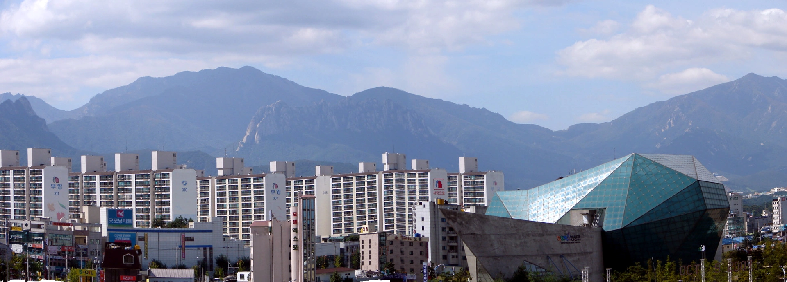
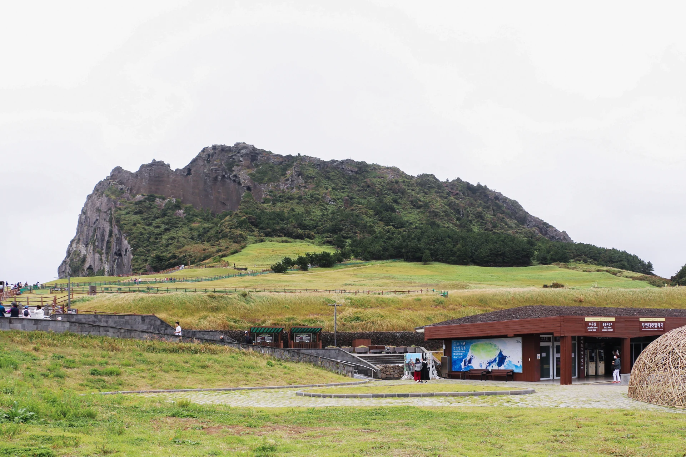
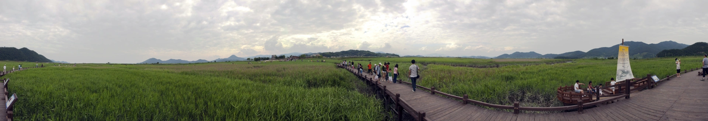
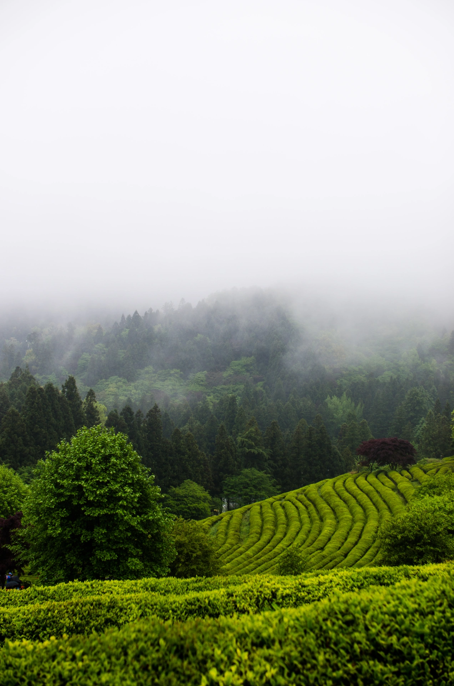

설악산 SEORAKSAN
바위 능선 사이로 계절이 지나가는 산
설악산의 풍경은 단단한 바위 능선과 깊은 계곡이 만든 선에서 시작됩니다. 해가 능선을 비스듬히 비추면 회색 암봉의 굴곡이 또렷해지고, 그 아래 숲은 바람의 방향에 따라 잔잔하게 색을 바꿉니다.
봄의 연둣빛, 여름 계곡의 짙은 초록, 가을 단풍, 겨울의 눈 덮인 능선까지 계절마다 산의 표정이 크게 달라집니다. 멀리서 보는 웅장함도 좋지만, 천천히 걸을수록 바위와 나무 사이에 숨어 있던 작은 장면이 눈에 들어옵니다.
- 암봉과 계곡
- 사계절
- 깊은 숲

제주 JEJU
검은 돌과 바람, 수평선이 만나는 섬
제주의 풍경에는 검은 현무암과 낮은 돌담, 완만한 오름, 멀리 열린 바다가 한 화면에 겹쳐집니다. 바람은 풀을 눕혔다 다시 일으키고, 구름의 그림자는 넓은 들판 위를 느린 속도로 건너갑니다.
해안에서는 파도가 거친 바위의 윤곽을 드러내고, 섬 안쪽으로 들어가면 둥근 오름과 숲길이 차분한 장면을 만듭니다. 같은 날에도 방향을 조금만 바꾸면 빛과 날씨가 달라져, 제주는 한 가지 색으로 기억하기 어려운 섬입니다.
- 현무암 해안
- 오름
- 바람

순천만 SUNCHEON BAY
갈대와 물길이 그려 놓은 느린 곡선
순천만에서는 바다와 육지의 경계가 반듯하게 나뉘지 않습니다. 갯벌 사이로 난 물길이 부드럽게 휘어지고, 바람을 받은 갈대밭은 넓은 수면처럼 한 방향으로 흔들립니다.
해가 낮아질수록 갈대 끝에는 따뜻한 빛이 오래 머물고, 물이 빠진 자리에는 하늘빛을 담은 가느다란 길이 남습니다. 잠시 걸음을 늦추면 새가 날아오르는 소리와 갈대가 스치는 소리가 풍경의 일부라는 것을 알게 됩니다.
- 갈대밭
- 갯벌의 물길
- 저녁빛

보성 녹차밭 BOSEONG TEA FIELDS
산비탈을 따라 초록의 선이 이어지는 곳
보성의 차밭은 산비탈을 따라 겹겹이 이어지는 곡선으로 기억됩니다. 가지런한 차나무 줄 사이로 시선을 옮기면 가까운 잎의 윤기부터 멀리 흐려지는 능선까지 초록의 농도가 조금씩 달라집니다.
이른 시간의 옅은 안개와 낮게 들어온 햇빛은 차밭의 굴곡을 한층 선명하게 만듭니다. 화려하게 꾸미지 않아도 반복되는 선과 부드러운 높낮이만으로 풍경에 고요한 리듬이 생깁니다.
- 차밭의 곡선
- 아침 안개
- 초록의 층